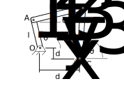

import numpy as np
import matplotlib.pyplot as plt
from scipy.optimize import fsolve
plt.style.use('fivethirtyeight')
from matplotlib import rc
plt.rc('text', usetex=True)
plt.rc('font', family='sans')
Module 2 - Project: four-bar linkage design¶
In this notebook, you will build your own four-bar mechanical linkage and plot the path of the components. You can choose your own link sizes. Some areas of interest for different backgrounds:
Automotive design: windshield wiper motion, watt linkage suspension
biomechanics: ACL-PCL knee joint model and knee replacement
anything else?
In this notebook, you will step through the process of defining the kinematics of a four-bar linkage.
What you’ll do¶
What you’ll need¶
Jupyter and Python - you can run this notebook with the “Launch” icon in the Engineering Dynamics online resource
vector equations to solve for the constraints on the linkage mechanism
A mechanical system to consider: choose three link lengths and the relative mounting position between the two
some plots and background explanation to explain what your mechanism is supposed to do

\(l_1\sin\theta_1+l_2\sin\theta_2-l_3\sin\theta_3 -d_y = 0\)
\(l_1\cos\theta_1+l_2\cos\theta_2-l_3\cos\theta_3 -d_x = 0\)
If you have one of the angles, e.g. \(\theta_1\), you use equations 1 and 2
to solve for the other two angles, \(\theta_2~and\theta_3\). Here you can
create a function and
use fsolve. The function input is a vector with two values and the output is a
vector with two values.
\(\bar{f}(\bar{x})= \left[\begin{array}{c} f_1(\theta_2,~\theta_3) \\ f_2(\theta_2,~\theta_3)\end{array}\right]=\left[\begin{array}{c} l_1\sin\theta_1+l_2\sin\theta_2-l_3\sin\theta_3 -d_y\\ l_1\cos\theta_1+l_2\cos\theta_2-l_3\cos\theta_3 -d_x \end{array}\right]\)
Defining your system¶
As an example, I am creating a short arm that pivots a longer arm. Similar to a windshield wiper design
Note: you can double-click this cell in Jupyter to edit the text. Then, you can update the geometry of your four-bar linkage.
link 1: \(l_1 = 0.25~m\)
link 2: \(l_2 = 1~m\)
link 3: \(l_3 = 1~m\)
support: \(d_x=0.95~m~and~d_y=0~m\)
The constraint function is defined below as Fbar, a function of
\(\theta_1\) and an array of \([\theta_2,~\theta_3]\) as such,
l1 = 0.25
l2 = 1
l3 = 1
a1 = np.pi/2
dy = 0
dx = 0.95
Fbar = lambda a1,x: np.array([l1*np.sin(a1)+l2*np.sin(x[0])-l3*np.sin(x[1])-dy,
l1*np.cos(a1)+l2*np.cos(x[0])-l3*np.cos(x[1])-dx])
Next, I choose a range of motion for link 1
\(\theta_1 = (0,~2\pi) = (0,~360^o)\)
and solve for the angles of links 2 and 3 as such
initialize my variables
a1as \(0-2\pi\),a2as zeros,a3as zerosset an initial solution guess for
fsolveuse a
for-loopto solve fora2anda3at each configuration
a1 = np.linspace(0, 2*np.pi)
a2 = np.zeros(len(a1))
a3 = np.zeros(len(a1))
xsol = np.array([0, np.pi/4])
for i in range(len(a1)):
xsol = fsolve(lambda x: Fbar(a1[i], x), xsol)
a2[i] = xsol[0]
a3[i] = xsol[1]
plt.plot(a1, a2, label = r'$\theta_2$')
plt.plot(a1, a3, label = r'$\theta_3$')
plt.xlabel(r'$\theta_1$ (radian)')
plt.ylabel('output angle (radian)')
plt.legend();
Motion of the links¶
Now I have the position of the links, but I want to see what it looks like and what paths the components trace. Here, I use the vector definitions to define the positions of the links and connections
\(r_A = l_1 \cos\theta_1\hat{i} + l_1 \sin\theta_1\hat{j}\)
\(r_B = r_A + r_{B/A} = r_A + l_2\cos\theta_2\hat{i} + l_2 \sin\theta_2\hat{j}\)
\(r_C = r_B + r_{C/B} = r_B - l_3\cos\theta_3\hat{i} - l_3 \sin\theta_3\hat{j}\)
\(r_P = r_A + r_{P/A} = r_A + \frac{l_2}{2}\cos\theta_2\hat{i} + \frac{l_2}{2} \sin\theta_2\hat{j}\)
rA = l1*np.vstack([np.cos(a1), np.sin(a1)])
rB = rA + l2*np.vstack([np.cos(a2), np.sin(a2)])
rC = rB - l3*np.vstack([np.cos(a3), np.sin(a3)])
rP = rA + l2/2*np.vstack([np.cos(a2), np.sin(a2)])
Plot one orientation and the paths¶
The paths of the links are now in the variables rA, rB, rC, and rP. I will plot the paths of these 4 points and the shape at a point in time.
links_x_locations = np.vstack([np.zeros(len(a1)),
rA[0, :],
rB[0, :],
rC[0, :]])
links_y_locations = np.vstack([np.zeros(len(a1)),
rA[1, :],
rB[1, :],
rC[1, :]])
i = 10
plt.plot(links_x_locations[:, i],
links_y_locations[:, i], 'k-o')
plt.plot(rA[0,:], rA[1,:], label = 'hinge A')
plt.plot(rB[0,:], rB[1,:], label = 'hinge B')
plt.plot(rC[0,:], rC[1,:], label = 'hinge C')
plt.plot(rP[0,:], rP[1,:], label = 'midpoint AB')
plt.legend()
plt.title('Paths and orientation for\n'+
r'$\theta_1$ = {:.1f}, $\theta_2$ = {:.1f}, $\theta_3$ = {:.1f}'.format(a1[i], a2[i], a3[i]))
plt.axis('equal');
Determining the speed of the components¶
Now, I use the constraint equations from above to determine the speed of the link motion.
\(\frac{d\bar{f}(\bar{x})}{dt}= \left[\begin{array}{c} f_1(\theta_2,~\theta_3) \\ f_2(\theta_2,~\theta_3)\end{array}\right]=\left[\begin{array}{c} l_1\dot{\theta_1}\cos\theta_1+l_2\dot{\theta_2}\cos\theta_2-l_3\dot{\theta_3}\cos\theta_3\\ l_1\dot{\theta_1}\sin\theta_1+l_2\dot{\theta_2}\sin\theta_2-l_3\dot{\theta_3}\sin\theta_3 \end{array}\right]\)
define the 2-equation function
initialize the solutions for the arrays:
da1,da2,da3solve the equations at each step in time in a
for-loop
drive_rate = 10 #rad/s
dFbar = lambda a1, a2, a3, dx: np.array([l1*drive_rate*np.sin(a1)+\
l2*dx[0]*np.sin(a2)-\
l3*dx[1]*np.sin(a3),\
l1*drive_rate*np.cos(a1)+\
l2*dx[0]*np.cos(a2)-\
l3*dx[1]*np.cos(a3)])
da1 = np.ones(len(a1))*10
da2 = np.zeros(len(a1))
da3 = np.zeros(len(a1))
xsol = np.array([0, 0])
for i in range(len(a1)):
xsol = fsolve(lambda dx: dFbar(a1[i], a2[i], a3[i], dx), xsol)
da2[i] = xsol[0]
da3[i] = xsol[1]
plt.plot(a1, da1, label = r'$\dot{\theta}_1$')
plt.plot(a1, da2, label = r'$\dot{\theta}_2$')
plt.plot(a1, da3, label = r'$\dot{\theta}_3$')
plt.legend()
plt.xlabel(r'$\theta_1$ (radian)')
plt.ylabel('output angular speed (radian/s)')
Text(0, 0.5, 'output angular speed (radian/s)')
Wrapping up¶
You should edit this notebook to create your own four-bar linkage analysis.
Choose a geometry
plot the motion and paths
plot the speeds of the links
add your own wrapping up section to add any details or further analysis
what did you learn?